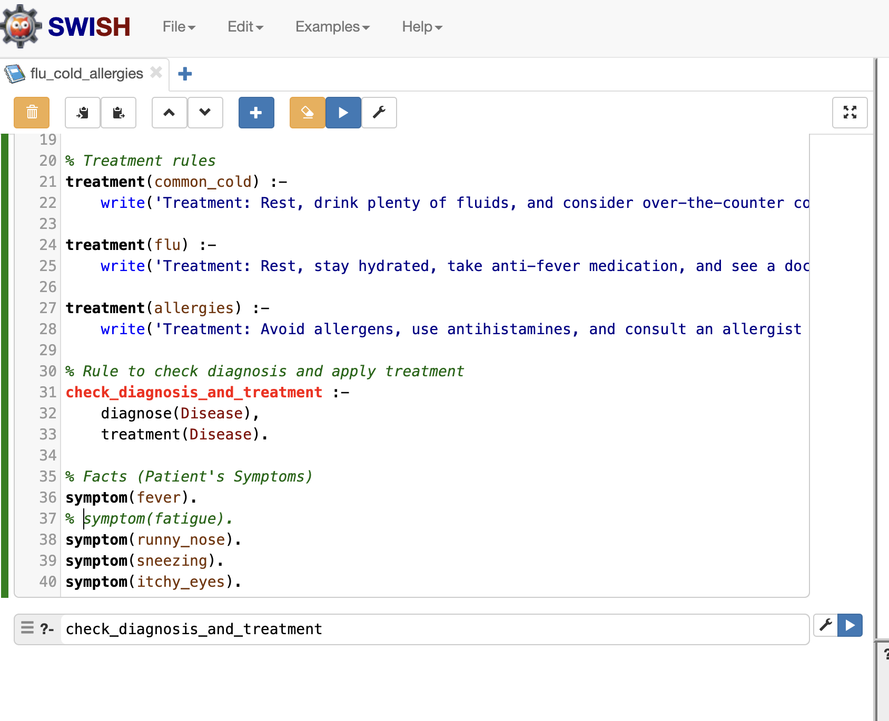
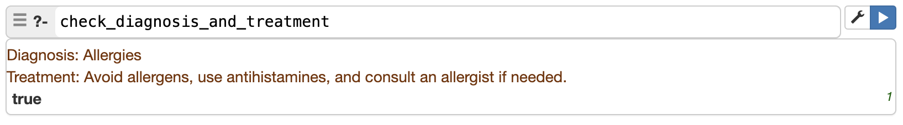

graph TD
A[Start] --> B{Runny nose?}
B -->|No| Z[No diagnosis]
subgraph Symptom_Check
B -->|Yes| C{Sneezing?}
C -->|No| Z
C -->|Yes| D{Fever?}
D -->|Yes| E[Flu]
D -->|No| F{Itchy eyes?}
F -->|Yes| G[Allergies]
F -->|No| H[Common Cold]
end
subgraph Diagnosis
E --> I[Diagnosis: Flu]
G --> J[Diagnosis: Allergies]
H --> K[Diagnosis: Common Cold]
end
subgraph Treatment
I --> L[Treatment: Rest, stay hydrated, take anti-fever medication, see doctor if symptoms worsen]
J --> M[Treatment: Avoid allergens, use antihistamines, consult allergist if needed]
K --> N[Treatment: Rest, drink fluids, consider over-the-counter cold medicine]
end
Play with Prolog
An Introduction to Logic Programming and Expert Systems
Learning Goals:
- Understand Expert Systems: Know what an expert system is, particularly as a narrow AI system.
- Explore Logic Programming: Learn the basic principles of logic programming and how Prolog is used to model complex decision-making processes.
- Learn to Implement an Expert System: Gain hands-on experience using programming to solve problems using logical rules and knowledge representation.
- Develop Problem-Solving Skills: Implement a simple expert system in Prolog, mimicking the decision-making capabilities of a human expert.
- Understand limitations of Expert Systems: Explore the concept of narrow AI and its practical applications in specific domains through the use of expert systems.
Introduction
In this exercise, you are going to use the Prolog programming language to build a simple expert system.
An Expert System (ES) is a type of artificial intelligence (AI) system that mimics the decision-making abilities of a human expert in a specific domain or field. It is considered a narrow AI system1, meaning it’s designed for a specific task or problem, rather than general intelligence. Expert Systems are built using logic programming languages like Prolog, which are well-suited for representing and reasoning with complex knowledge and rules. ESs are designed to reason, solve problems, and make decisions autonomously, just like a human expert would. Expert Systems are built using knowledge representation, inference, and reasoning techniques to capture and apply the expertise of human experts. All that said, Expert Systems often represent a decision tree or a set of rules that are applied to a set of inputs to generate a decision. Think about a phone tree that you might encounter when calling a customer service line or a decision tree that you might use to diagnose a patient.
In this exercise, we will explore the concept of Expert Systems and how they can be implemented. The goal is NOT to become an expert in Expert Systems, but to get a sense of how they REALLY work and how they can be used to solve problems. Many expert systems that were built in the 1980s and 1990s were built using Prolog, a logic programming language that is well-suited for representing and reasoning with complex knowledge and rules. Prolog is also fairly readable by humans, so it is a great way to demonstrate a REAL expert system. Many of these systems are likely still in use, though they may have been updated to use more modern technologies.
As you work through this exercise, think about how complex an expert system would need to be to be useful in a clinical setting. What are the key components that would need to be included? How would you validate the system to ensure that it is accurate and reliable? What are the limitations of expert systems, and how might they be overcome?
Components of an Expert System
An ES is built around a knowledge base that contains a vast amount of information, rules, and relationships specific to the domain it’s designed for. This knowledge is typically acquired from human experts, research papers, or other sources. The knowledge base is organized and structured to facilitate efficient reasoning and problem-solving. Think of this as the “rules” or “facts” that the system uses to make decisions. In a medical setting, gathering the knowledge base might involve reviewing textbooks, guidelines, and expert opinions to extract the key information needed to make diagnoses and treatment recommendations.
The inference engine is the “brain” of the ES. It uses the knowledge base to draw conclusions, make decisions, and solve problems. The engine applies logical rules and reasoning techniques to arrive at a solution. Note that the inference engine doesn’t “learn” in the traditional sense, but rather applies predefined rules to the input data. New rules can be added to the system to expand its capabilities, but the system doesn’t learn from experience like a neural network would.
An ES typically has a user-friendly interface that allows users to input queries, ask questions, or provide data. The system then uses this input to generate a response, provide recommendations, or solve a problem. The user interface can be text-based, graphical, or voice-activated, depending on the application.
ESs use various reasoning techniques, such as forward and backward chaining, to solve problems and make decisions. The reasoning and problem solving capabilities of an ES are what set it apart from traditional software systems. Languages like Prolog are commonly used to implement the logic and reasoning components of an ES.
Applications of Expert Systems
Expert Systems have been applied in various domains and industries, including healthcare, finance, manufacturing, and customer service. ESs can help diagnose diseases, recommend treatments, and guide patient care. ESs can monitor production processes, detect defects, and recommend quality improvements. ESs can provide customer support, answer frequently asked questions, and route complex issues to human representatives.
Limitations of Expert Systems
While Expert Systems have shown significant promise, they also have some limitations. Building an ES requires a significant amount of knowledge acquisition, which can be time-consuming and costly. The knowledge base must be accurately represented and organized to ensure effective reasoning and problem-solving. ESs require ongoing maintenance to keep their knowledge base up-to-date and ensure they remain effective. ESs may struggle with complex, ambiguous, or uncertain problems that require human intuition or creativity. Because ESs rely on predefined rules and logic, they may not adapt well to new or unexpected situations such as additional symptoms, tests, or rare conditions not accounted for when the system was built.
Using ChatGPT (or Claude) to understand Expert Systems
Before we dive into the actual exercise, ask ChatGPT (or Claude) a few questions to understand the concept of Expert Systems better. Some examples might include:
- What is an Expert System?
- How do Expert Systems work?
- What are the components of an Expert System?
- What are some applications of Expert Systems?
- What are the limitations of Expert Systems?
- How are Expert Systems different from traditional software systems?
- How do expert systems compare to machine learning systems?
- What are some examples of Expert Systems in healthcare?
The Prolog Programming Language
Prolog (short for “Programming in Logic”) is a high-level programming language associated with artificial intelligence (AI) and computational linguistics. It was developed in the early 1970s by Alain Colmerauer and his colleagues at the University of Marseille, with significant contributions from Robert Kowalski at the University of Edinburgh. The language was designed to process natural language and solve logical problems, making it one of the earliest AI-specific programming languages.
Key features of Prolog
Declarative Approach: Prolog focuses on what needs to be solved rather than how to solve it. Think of it like giving a set of rules and facts, and then letting the computer figure out the solution on its own, rather than telling it step-by-step how to get there.
Logical Reasoning: Prolog is built on logic. It uses logical thinking to figure things out, much like how we reason through problems in everyday life. For example, if you tell it certain facts like “All humans are mortal” and “Socrates is a human,” Prolog can figure out that “Socrates is mortal.”
Facts, Rules, and Questions: Prolog programs are made up of facts (like “Socrates is a human”), rules (like “all humans are mortal”), and questions (like “is Socrates mortal?”). You give Prolog the facts and rules, and then you can ask it questions. It works to find the answers using the information you’ve provided.
In short, Prolog is like a puzzle solver that uses logic and rules to find solutions, and you don’t have to tell it every step—it figures that part out by itself!
Role in AI
Prolog has played a significant role in the history of AI and has been used in various AI applications. Some of the key areas where Prolog has been applied include:
- Expert Systems: In the 1980s, Prolog was widely used to develop expert systems, which rely on predefined knowledge and logical rules to provide decision-making capabilities.
- Natural Language Processing (NLP): Prolog’s strengths in pattern matching and symbolic reasoning made it a good choice for early NLP research and applications, as it could model syntactic and semantic relationships in language.
- Automated Theorem Proving: Due to its foundation in formal logic, Prolog was used in AI systems aimed at proving theorems and solving puzzles.
Historical Significance
Prolog played a crucial role in early AI research. It was one of the key languages, alongside LISP, that shaped the development of AI methodologies, particularly in areas such as knowledge representation, reasoning, and machine learning. In the 1980s, Prolog gained popularity when it was adopted by the Japanese Fifth Generation Computer Systems (FGCS) project, which aimed to develop intelligent computers. Although the project did not meet all of its goals, it contributed to Prolog’s international prominence.
Current Usage
Prolog is not as widely used today as mainstream languages like Python or Java, particularly in AI development. However, it still has a niche role in certain areas of AI, particularly in research and specialized fields like automated reasoning, logic programming, and computational linguistics. Prolog continues to be taught in some academic settings as a tool for understanding logic programming and the fundamentals of AI.
Prolog remains an important historical pillar in AI, particularly for its contributions to logical reasoning, knowledge representation, and expert systems.
An example Prolog program
This example illustrates a simple Prolog program that defines facts, rules, and queries. The program is designed to answer the question of whether Socrates is mortal based on the fact that he is human. In practice, Prolog programs can be much more complex, with many facts, rules, and queries that define a domain of interest.
In the code below, everything in a line after a ‘%’ is a comment that explains what the code is doing. Comments are not part of the program itself but are there to help you understand the code.
% Facts
human(socrates).
% Rules
mortal(X) :- human(X).
% Queries
?- mortal(socrates).Explanation:
Facts:
In Prolog, facts are basic statements about things we know to be true. In this case, the facthuman(socrates).means that Socrates is a human. This is a piece of information we’re giving to the program. In a medical context, we might have facts likesymptom(fever).orhistory_of(cancer).that represent information about patients.Rules:
Rules in Prolog define relationships between facts. Here, we have the rulemortal(X) :- human(X)., which means “X is mortal if X is human.” “Variables” in prolog begin with capital letters, soXis a variable. In Prolog, the:-symbol can be read as “if.” So, this rule is saying, “if X is human, then X is mortal.” This is a simple logical relationship that Prolog can use to make inferences.Queries:
When we want to ask Prolog a question (or query), we do so by providing a query. For example, the query?- mortal(socrates).is asking, “Is Socrates mortal?” Prolog will use the facts and rules we’ve provided to answer this question.In this case, it looks at the rule
mortal(X) :- human(X).and sees that since Socrates is a human (from the facthuman(socrates).), he must also be mortal. So, Prolog will respond with “Yes” ortrue.
How It Works:
- human(socrates).: This is a fact we already know—Socrates is human.
- mortal(X) :- human(X).: This is a rule that says any human is mortal.
- ?- mortal(socrates).: This is the query we ask, and Prolog checks the facts and rules to conclude that Socrates is mortal because he is human.
In summary, this small Prolog program uses logic to infer that Socrates is mortal based on the information that he’s human. It reflects how Prolog works by defining facts, applying rules, and answering queries logically.
The task
In this exercise, we are going to get a sense of how Prolog works by building a simple expert system. We will create a knowledge base that contains facts and rules about a domain of interest, which will be the clinical question of differentiating:
- flu,
- common cold,
- and allergies.
We will then use Prolog to query this knowledge base and draw conclusions based on the rules and relationships defined in the system.
Knowledge Base
The first step in building an expert system is to define the knowledge base. This knowledge base will contain the facts and rules that the system will use to reason and make decisions. In our case, we are going to build an expert system that can diagnose common conditions like colds, flu, and allergies based on a set of symptoms.
We are going to limit our facts to the following symptoms:
- runny nose
- sneezing
- fever
- fatigue
These are common symptoms that can help differentiate between colds, flu, and allergies. For this exercise, lets assume that the following rules apply:
- If a patient has a runny nose and sneezing with or without a fever, they likely have a common cold.
- If a patient has a fever, sore throat, and runny nose, they likely have the flu.
- If a patient has sneezing and a runny nose but no fever, they likely have allergies.
We can define these symptoms as facts in Prolog, like this:
| Symptom | Prolog Fact Representation |
|---|---|
| Runny Nose | symptom(runny_nose). |
| Sneezing | symptom(sneezing). |
| Fever | symptom(fever). |
| Fatigue | symptom(fatigue). |
| Itchy Eyes | symptom(itchy_eyes). |
We are going to simplify the rules for the sake of this exercise, but in a real-world scenario, the rules would be more complex and based on a larger set of symptoms and diagnostic criteria. In this case, we’ll assume that the presence or absence of these symptoms is enough to differentiate between the conditions.
For the common cold, we’ll use the following rule:
- If a patient has a runny nose and sneezing but no fever, they likely have a common cold.
- Treatment: Rest, drink fluids, consider over-the-counter cold medicine.
For the flu, we’ll use the following rule:
- If a patient has a fever, fatigue, and runny nose, they likely have the flu.
- Treatment: Rest, stay hydrated, take anti-fever medication, see a doctor if symptoms worsen.
For allergies, we’ll use the following rule:
- If a patient has sneezing, a runny nose, and itchy eyes, they likely have allergies.
- Treatment: Avoid allergens, use antihistamines, consult an allergist if needed.
Visualizing the Expert System
Before we dive into the Prolog code, let’s visualize the expert system using a flowchart. This will help us understand the logic and decision-making process that the system will follow. The flowchart will show how the system will diagnose patients based on their symptoms and recommend appropriate treatments.
Reasoning engine
Once we have defined our knowledge base, we need some kind of “reaoning” or “inference” engine to process the information and draw conclusions. This is where the Prolog programming language comes in. Prolog is a logic programming language that is well-suited for representing and reasoning with complex knowledge and rules. It uses a declarative syntax that allows you to define relationships, rules, and facts in a concise and intuitive way.
Prolog programs consist of a set of facts and rules that define the relationships between different entities in the system. The Prolog interpreter uses these facts and rules to answer queries and make inferences based on the input data.
Here are some facts that we might include in our Prolog program based on some symptoms that a patient might present with:
% Facts
symptom(fever).
symptom(fatigue).
symptom(runny_nose).
symptom(sneezing).
symptom(itchy_eyes).When we want to use Prolog, we tell the system what we know (facts) and what we want to know (queries). The system then uses the rules and facts to answer our queries.
And here are some rules that we might include in our Prolog program based on the diagnostic criteria for different conditions:
% Rules for diagnossis
% Diagnosis rules
diagnose(common_cold) :-
symptom(runny_nose),
symptom(sneezing),
\+ symptom(fever),
write('Diagnosis: Common Cold'), nl.
diagnose(flu) :-
symptom(fever),
symptom(fatigue),
symptom(runny_nose),
write('Diagnosis: Flu'), nl.
diagnose(allergies) :-
symptom(sneezing),
symptom(runny_nose),
symptom(itchy_eyes),
write('Diagnosis: Allergies'), nl.And we can do the same for the treatment recommendations:
% Rules for treatment
treatment(common_cold) :-
write('Treatment: Rest, drink plenty of fluids, and consider over-the-counter cold medicine.'), nl.
treatment(flu) :-
write('Treatment: Rest, stay hydrated, take anti-fever medication, and see a doctor if symptoms worsen.'), nl.
treatment(allergies) :-
write('Treatment: Avoid allergens, use antihistamines, and consult an allergist if needed.'), nl.Finally, we can put it all together in a Prolog program that checks the symptoms, makes a diagnosis, and provides treatment recommendations:
% Rule to check diagnosis and apply treatment
check_diagnosis_and_treatment :-
diagnose(Disease),
treatment(Disease).Make it REAL
It turns out that there is an online “Prolog interpreter” that you can use to run Prolog programs in your web browser. I’ve created the prolog program for you, and you can run it by visiting the following link:
When you visit the link, you’ll see something like this:

You can click the BOTTOM blue button next to the “check_diagnosis_and_treatment” button to execute the program and see the results.

If you want to try with different symptoms, you can edit the facts at the top of the program and then click the “check_diagnosis_and_treatment” button to run the program again. Remember that putting a % mark at the beginning of the line turns the line into a comment, so it any line (or symptom) that starts with % will be ignored by the Prolog interpreter. For example, modify the symptoms like this:
% Facts (Patient's Symptoms)
symptom(fever).
symptom(fatigue).
symptom(runny_nose).
symptom(sneezing).
% symptom(itchy_eyes).Then click the “check_diagnosis_and_treatment” button to run the program again.
Note that adding new symptoms WILL NOT change the diagnosis or treatment recommendations UNLESS you add or modify the rules of the program. Try it by adding a symptom (fact) like symptom(vomiting) and see what happens.
The goal here is not to learn Prolog in depth, but to get a sense of how it works and how it can be used to build expert systems.
Conclusion and Reflection
Exercise: How does this Prolog program compare to your own decision-making process for colds, flu, and allergies? Does it capture the key considerations that you would take into account when making a diagnosis and treatment plan? Or would you need to add additional rules and information to make it more accurate and useful?
Exercise: Run your own little thought experiment. Imagine you are working in your future specialty. How could an expert system like this one be useful in your clinical practice? What are the potential benefits and limitations of using such a system?
Additional Thought Exercise
Our knowledge base could also be derived from literature. For example, we could use from an article on the diagnosis and management of acute otitis media (ear infection) in children such as the “Diagnosis and Management of Acute Otitis Media in Children” by Lieberthal et al., published in Pediatrics in 2013.
- How complex would the expert system based on this article be?
- What are some of the key facts that you would want to include (signs, symptoms, patient characteristics, etc.)?
- What are some of the key rules that you would want to include (diagnostic criteria, treatment options, follow-up recommendations, etc.)?
- How would you validate the system to ensure that it is accurate and reliable?
- What are the limitations of such a system, and how might they be overcome?
- Why do you think expert systems like this hypothetical system for diagnosing and treating acute otitis media are not more widely used in clinical practice?
Footnotes
See https://www.datacamp.com/blog/what-is-narrow-ai for more information on narrow AI.↩︎